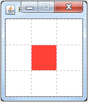
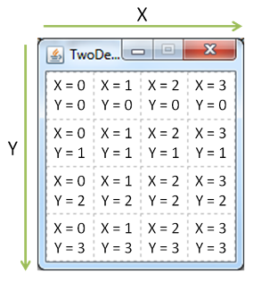
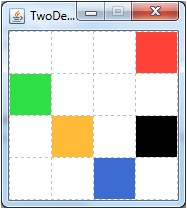
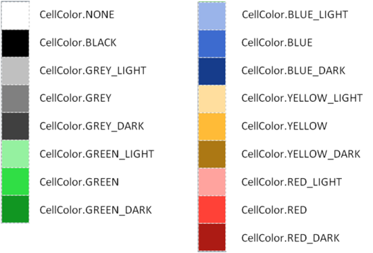
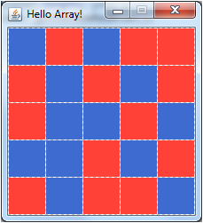

Instructions for TwoDeeGrid
What is TwoDeeGrid?
The TwoDeeGrid is a graphical environmal for experimenting in Java. It consists of a Grid of square coloured cells that can be altered programmatically.

It has the following main features:
- Creating grids of arbitrary size
- Colouring the cells in different ways
- Input from keyboard and mouse
- Waiting time spans
First Steps
Download and Installation
Copy the current version from here and unpack the archive.
Create a Java-Project in Eclipse in drag the file twodeegrid.jar onto the project-name in the Package Explorer on the left side. In the following dialog select the option Copy files and click OK.
twodeegrid.jar should now appear in your project. Now, the library must be made usable for your own programs: Right-click twodeegrid.jar and select the menu entry Build Path -> Add to build path.
You can create your own classes via the menu *File -> New -> Class". Insert the following code as the first line after your package declaration:
import twodeegrid.*;
"Hello World"
A simple code example: First the grid is initialized to consist of 3x3 cells and the have the window title "Hello World". Then the upper left cell (coordinate X=0, Y=0) is coloured red:
import twodeegrid.*;
public class HelloWorld {
private static void main(String[] args) {
TwoDeeGrid g = new TwoDeeGrid(3, 3, "Hello World");
g.setColorAt(0, 0, CellColor.RED);
}
}
The result when running the program:

The grid stays on screen after the main-method finishes execution. The program is only finished when the window is manually closed by clicking on the close-symbol.
The Grid

The Grid consists of square cells, that can be adressed using their horizontal (X) and their vertical (Y) coordinate. Coordinates are counted starting with 0. The upper left corner ist X=0, Y=0.
Initializing the Grid
The grid can be initialized and shown by creating a TwoDeeGrid Object. Two different constructors are defined:
public TwoDeeGrid()
public TwoDeeGrid(int xSize, int ySize, String title)
The first variant creates a standard grid with the size 8x8. The second constructor can be used to define an arbitrarily sized grid with a specific windwo title. The size of the single cells is adapted automatically depending on the screen resolution.
Cell Colors
Setting Cell Colors
public void setColorAt(int x, int y, CellColor color)
setColorAt colors the cell with the coordinate 'x' and 'y'. The third parameter is the cell color to set. The color can be given directly based on color constants (see Color Constants) or generated randomly using different provided methods (see Random Colors).
All coordinate values are calculated modulo the size of the TwoDeeGrid. This means that for a coordinate x equal or larger the size of the raster, counting restarts at the left side of the grid. A value smaller than 0 adresses a cell counting from the right side of the TwoDeeGrid.
The following example...
TwoDeeGrid g = new TwoDeeGrid(4,4, "TwoDeeGrid");
g.setColorAt(1, 3, CellColor.YELLOW);
g.setColorAt(-1, 0, CellColor.RED);
g.setColorAt(4, 1, CellColor.GREEN);
g.setColorAt(2, -1, CellColor.BLUE);
g.setColorAt(103, 2, CellColor.BLACK);
...yields:

public void clear()
clear() deletes the grid and resets its values to their white base color.
Reading Cell Colors
CellColor getColorAt(int x, int y)
returns the color at position x,y. Der value can be compared with the predefined constants.
Example:
if (g.getColorAt(1, 3) == CellColor.YELLOW) {
// Your Program here...
}
Color Constants
All color constants are provided by the class CellColor:

The white cell color plays a special role: It stands for a uncolored cell in the grid. Its constant is CellColor.NONE.
Example:
TwoDeeGrid g = new TwoDeeGrid(3, 3, "Hello World");
g.setColorAt(1, 1, CellColor.GREEN_LIGHT);
Random Colors
Color values can be created randomly:
public static CellColor getRandomCellColor()
...returns a CellColor-object of random color.
public static CellColor getRandomRedBlue()
...randomly returns CellColor.RED or CellColor.BLUE.
public static CellColor getRandomOnOff()
...randomly returns CellColor.NONE or CellColor.BLACK.
public static CellColor getRandomOnOff(double probabilityOn)
...randomly returns CellColor.NONE or CellColor.BLACK. The parameter probabilityOn is the probability that the returned value is "on" (e.g. black). 0.0 means 0% probability, 1.0 means 100% probability, 0.5 is 50%,...
Working with the Grid as an Array
public CellColor[][] getCellArray()
returns a copy of the whole TwoDeeGrid as a two-dimensional array of color values (CellColor). The array can be altered freely. Changes will not instantly get visible, but can be given back to the grid with the following method:
public void updateCellArray(CellColor[][] cells)
Using the array instead of working with getColorAt() und setColorAt() pays off when a large number (or all) cells should be altered at once.
The following code example...
TwoDeeGrid g = new TwoDeeGrid(5, 5, "Hello Array!");
CellColor[][] cells = g.getCellArray();
for (int x = 0; x < cells.length; x++) {
for (int y = 0; y < cells[x].length; y++) {
cells[x][y] = CellColor.getRandomRedBlue();
}
}
g.updateCellArray(cells);
...yields:

Keeping Track of Time
public void waitTime(double time)
stops the program execution for a given time span. The parameter time sets the time spand in seconds.
waitTime can be used for dynamics changes or animations. The following example creates a grid with a blinking red square in the middle:
TwoDeeGrid g = new TwoDeeGrid(3, 3, "Blink!");
while(true) {
g.setColorAt(1, 1, CellColor.RED);
g.waitTime(0.3);
g.setColorAt(1, 1, CellColor.NONE);
g.waitTime(0.6);
}
User Input
A program can be made interactive via user input. TwoDeeGrid has two possibilities: mouse (or touchscreen) input and the keyboard.
Mouse Input
public MouseClick waitMouseClick()
waits until the user clicks on a cell. The method then returns an object of type MouseClick.
MouseClick holds information about the click that can be accessed using the following methods:
public int getX()
public int getY()
public int getType()
getX() and getY() return the X- and Y-coordinate of the selected cell. getType() returns which mouse button was pressed: the left (MouseClick.LEFT), the right (MouseClick.RIGHT) or the middle (MouseClick.MIDDLE) mouse button.
The following example allows to paint on the grid using the mouse:
public static void main(String[] args) {
TwoDeeGrid g = new TwoDeeGrid(5,5, "TwoDeeGrid");
while(true) {
MouseClick click = g.waitMouseClick();
g.setColorAt(click.getX(), click.getY(), CellColor.getRandomCellColor());
}
}
Keyboard Input
public int getKeyPressed()
returns the last key that has been pressed on the keyboard. Contrary to waitMouseClick() getKeyPressed() does not wait until a key has been pushed.
The different key pressed events are encoded in the JDK class KeyEvent. If no key was pressed KeyEvent.CHAR_UNDEFINED is returned.
The following example opens a narrow window. The green square can be moved left and right using the arrow keys:
TwoDeeGrid g = new TwoDeeGrid(9, 1, "Press LEFT/RIGHT");
int pos = 4;
int key;
while (true) {
g.clear();
g.setColorAt(pos, 0, CellColor.GREEN);
do {
key = g.getKeyPressed();
} while (key == KeyEvent.CHAR_UNDEFINED);
switch (key) {
case KeyEvent.VK_LEFT:
pos--;
break;
case KeyEvent.VK_RIGHT:
pos++;
break;
}
}
Reference (Classes and Methods)
TwoDeeGrid
public TwoDeeGrid(int xSize, int ySize, String title)\ Creates a grid with dimensionsxSizexySizeand the titletitle.public TwoDeeGrid()\ Creates a grid with dimensions 8x8.public int getGridSizeX()\ Returns the rasters width (number of cells).public int getGridSizeY()\ Returns the rasters height (number of cells).public CellColor getColorAt(int x, int y)\ Returns the color value at position (x,y). (0, 0) means the upper left corner.public void setColorAt(int x, int y, CellColor color)\ Sets the color value at position (x,y) tocolor. (0, 0) means the upper left corner.public void clear()\ Clears the grid and colors all cells white.public CellColor[][] getCellArray()\ Returns the grid as a two-dimensional array. The color values can be accessed withcell[x][y].public void updateCellArray(CellColor[][] cells)\ Sets the grid cells to the color values in the arraycells.public void waitTime(double time)\ Waitstimeseconds.public MouseClick waitMouseClick()\ Waits until one of the cells was clicked. Returns an object with additional information.public int getKeyPressed()\ Returns the keycode for the last pressed key. The keys codes are defined inKeyEvent.
CellColor
public static CellColor getRandomCellColor()\ Returns a random color value.public static CellColor getRandomRedBlue()\ Randomly returnsCellColor.REDorCellColor.BLUE.public static CellColor getRandomOnOff()\ Randomly returnsCellColor.BLACKorCellColor.NONE.public static CellColor getRandomOnOff(double probabilityOn)\ Randomly returnsCellColor.BLACK(with probabilityprobabilityOn) orCellColor.NONE(with probability1 - probabilityOn).
Defined color constants: see Color Constants.
MouseClick
public int getX()\ X-coordinate of the clicked cell.public int getY()\ Y-coordinate of the clicked cell.public int getType()\ pushed mouse button (MouseClick.LEFT,MouseClick.RIGHTorMouseClick.MIDDLE).